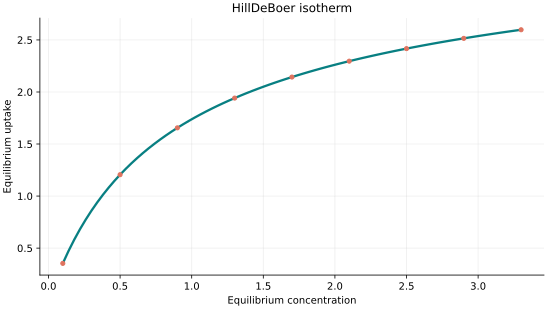
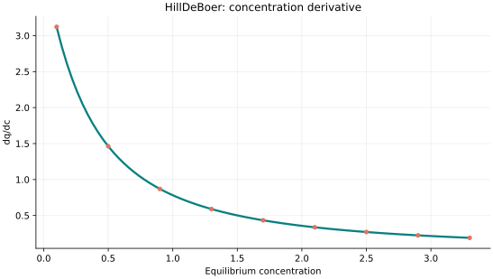
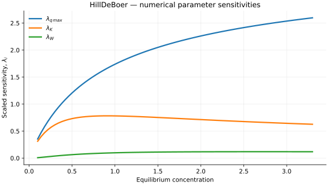

Hill–de Boer isotherm
Original publication and scope
The Hill–de Boer isotherm describes an adsorbed phase with molecular mobility and lateral interactions. Its theoretical antecedent is T. L. Hill (1946), Statistical Mechanics of Multimolecular Adsorption. II. Localized and Mobile Adsorption and Absorption, The Journal of Chemical Physics, 14 (7), 441–453, DOI 10.1063/1.1724166. Hill considered a mobile adsorbed first layer through a two-dimensional equation of state. J. H. de Boer subsequently provided a wider treatment in The Dynamical Character of Adsorption (Clarendon Press, Oxford, 1953; bibliographic record).
A recent comparison by Chu, Hashim, Tran and Bollinger (2023), S-shaped adsorption isotherms modeled by the Frumkin–Fowler–Guggenheim and Hill–de Boer equations, Monatshefte für Chemie, 154, 1127–1135, DOI 10.1007/s00706-023-03116-w, found that similar curve-fitting performance can conceal substantial differences in estimated saturation capacities. De Smedt et al. (2025) also applied the Hill–de Boer equation to CO2 adsorption by pelletised activated carbon in Biomass and Bioenergy, 107699, DOI 10.1016/j.biombioe.2025.107699. These studies illustrate applications of the model without constituting validation of every fitted parameter as an independently measurable physical quantity.
Mathematical formulation
The three adjustable parameters are q_max (capacity), K (affinity)
and W (interaction energy). Capacity and affinity must be strictly positive;
interaction energy must be non-negative. All values must be finite. Equilibrium
concentration must be non-negative, while the absolute temperature is a separate,
strictly positive input always in kelvin (K). By default, the gas
constant is 8.31446261815324 J mol⁻¹ K⁻¹, so the interaction energy uses
joules per mole. The constructor can select kJ/(mol K) or L atm/(mol K)
provided that the interaction energy is expressed in the corresponding units.
A bracketed, monotonic log-activity solver determines the surface coverage \(0\leq\theta<1\); derivatives use implicit differentiation, rather than numerical differentiation of iterates.
The accepted branch requires \(W/(RT)\leq 4\), a conservative sufficient condition for a unique root. The library deliberately rejects stronger interaction branches rather than selecting one equilibrium root arbitrarily.
The implementation requires the following admissible parameter and input domain:
The temperature input \(T\) must always be supplied in kelvin (K). The interaction energy and selected value of \(R\) must use compatible units.
C++20 usage
#include <isotherm/isotherm.hpp>
const isotherm::models::HillDeBoer model{5, 0.8, 900};
const isotherm::Real temperature_k = 298.15; // Always kelvin.
const isotherm::Real uptake = isotherm::evaluate(model, 0.8, temperature_k); // 1.5633426
const isotherm::Real slope = isotherm::derivative(model, 0.8, temperature_k); // 0.97551664
// Equivalent energy representation: W=0.9 kJ/mol.
const isotherm::models::HillDeBoer model_kj{
5, 0.8, 0.9, isotherm::gas_constant_unit::kilojoule_per_mole_kelvin};
Hill–de Boer isotherm plot


Fig. 76 Hill–de Boer uptake for \(q_{\max}=5\), \(K=0.8\), \(W=900\) at \(T=298.15\,\mathrm{K}\).
Concentration derivative


Fig. 77 Concentration derivative of Hill–de Boer uptake for \(q_{\max}=5\), \(K=0.8\), \(W=900\) at \(T=298.15\,\mathrm{K}\).
Numerical sensitivity
For each coefficient \(k_i\), the numerical scaled sensitivity is
Numerical values are obtained by perturbing individual parameters and evaluating new instances of the C++ model. The accompanying C++20 example performs this procedure.


Fig. 78 Scaled sensitivities \(\lambda_{q_{\max}}\), \(\lambda_{K}\), \(\lambda_{W}\) versus equilibrium concentration at \(T=298.15\,\mathrm{K}\).